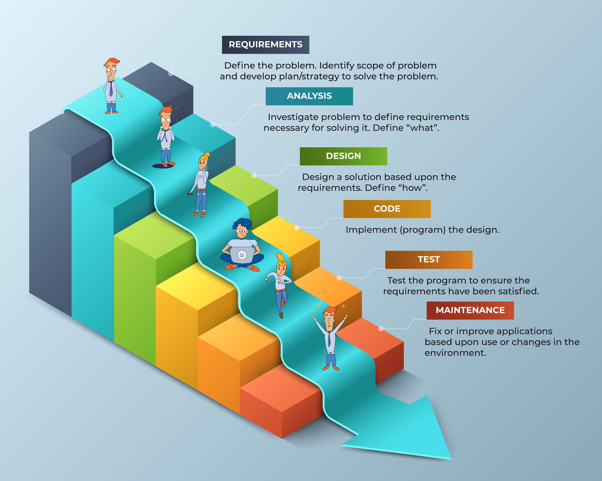

Método tradicional de desenvolvimento de software - Cascata | Waterfall

- mais valor à documentação!
- mais valor ao que está no contrato!
Metodologias Ágeis (AGILE)
- mais valor ao trabalho feito
- poder ter regularmente mais funcionalidades implementadas!
- mais valor ao cliente | poder receber feedback regularmente do cliente
- damos mais valor à equipa / pessoas
SCRUM